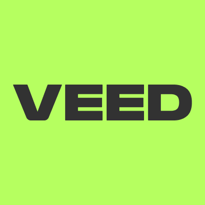
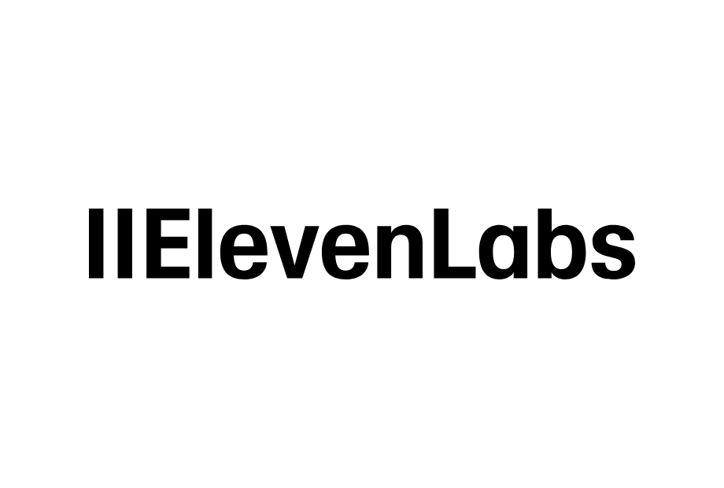
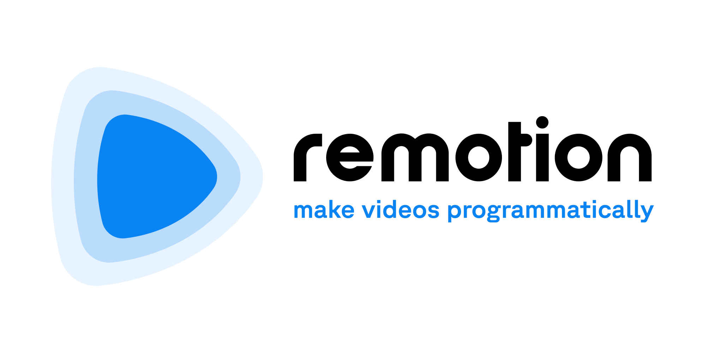

PORTAFOLIO CREATIVO / 2026
Yazmin Moreno.
Edición audiovisual · Contenido creativo · Diseño gráfico
PORTAFOLIO CREATIVO / 2026
Edición audiovisual · Contenido creativo · Diseño gráfico
ELIGE TU PROPIO RECORRIDO ✦ 2026
01 / MIS HERRAMIENTAS
Programas que utilizo para editar, construir y comunicar ideas.

VVEED
11ElevenLabs
RRemotion02 / CONTACTO
Disponible para conversar sobre proyectos audiovisuales, diseño y oportunidades creativas.
YAZMIN MORENO © 2026 · MÉXICO
TRABAJOS SELECCIONADOS
Una selección de proyectos con distintas competencias.